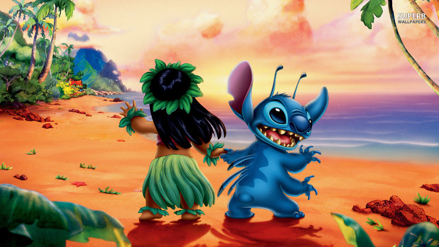

Lilo and Stitch Information
Links
Main Page
Lilo and Stitch Fun Facts
Movie Trailer
Lilo and Stitch Trailer
Lilo and Stitch Trailers Mixed together

Lilo and Stitch Summary
A tale of a young girl's close encounter with the galaxy's most wanted extraterrestrial. Lilo is a lonely Hawaiian girl who adopts a small ugly "dog," whom she names Stitch. Stitch would be the perfect pet if he weren't in reality a genetic experiment who has escaped from an alien planet and crash-landed on Earth. Through her love, faith and unwavering belief in ohana, the Hawaiian concept of family, Lilo helps unlock Stitch's heart and gives him the ability to care for someone else.
I got the review from eventful's website
Lilo and Stitch Review
This is part of a review on the movie
"And so begins one of the most unusual and creative animated films from the Disney studios. Featuring a completely new style of drawing,and backgrounds that look like watercolour paitings, Disney is taking a bold step in trying something a little differnet. The artwork seems like a combination of "Winnie the Pooh" and saturday morning cartoons. The dialogue and slapstick comedy is much more reminiscent of Warner Brothers beloved "Looney Tunes." Expect for a handful of well chosen Elvis Presely songs, and some beautiful Hawaiian music, there are none of the musical numbers that one would expect to find in a typical Disney film." - Theoron from Chicago, Illinois
I found this review on IMDb's website
Links to Websites - I got my information from
Eventful
IMDb